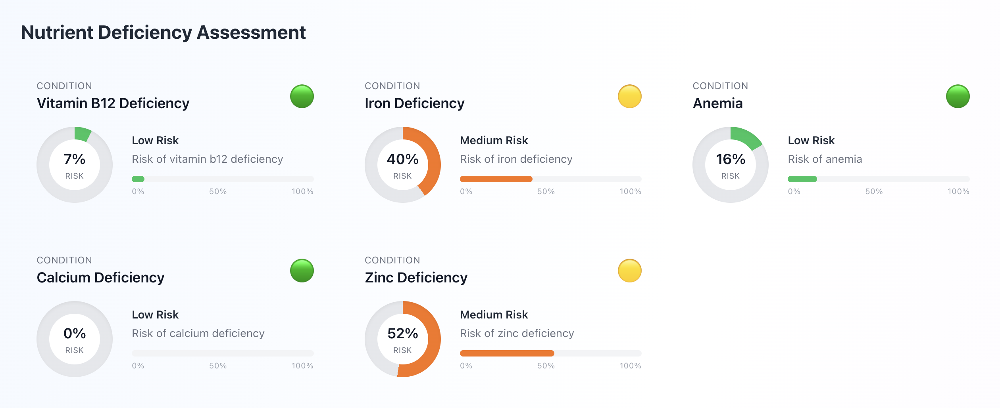

ML nutrition
Nutrient ML Study
Prototype that predicts nutrient deficiencies and delivers personalised nutrition recommendations using the NHANES 2013–2014 dataset.

What I built
- Trained XGBoost classifiers (Python, Pandas, mutual_info, SHAP) to predict deficiencies such as vitamin B12 and flag at least two health risks using NHANES 2013–2014.
- Built a FastAPI backend with documented Swagger endpoints so the frontend could request risk scores, top contributing features, and evidence-based recommendations.
- Stored SHAP explanations as .pkl artifacts and exported reporting via matplotlib/seaborn for medical review.
- Developed a Next.js/React frontend styled with Tailwind-inspired utilities and custom components (RiskGauge, FeatureImportance, DietaryValidationCard) plus lucide-react icons.
- Used an Axios-like service to connect the UI to the FastAPI backend, letting users input their profile data and receive personalised predictions.